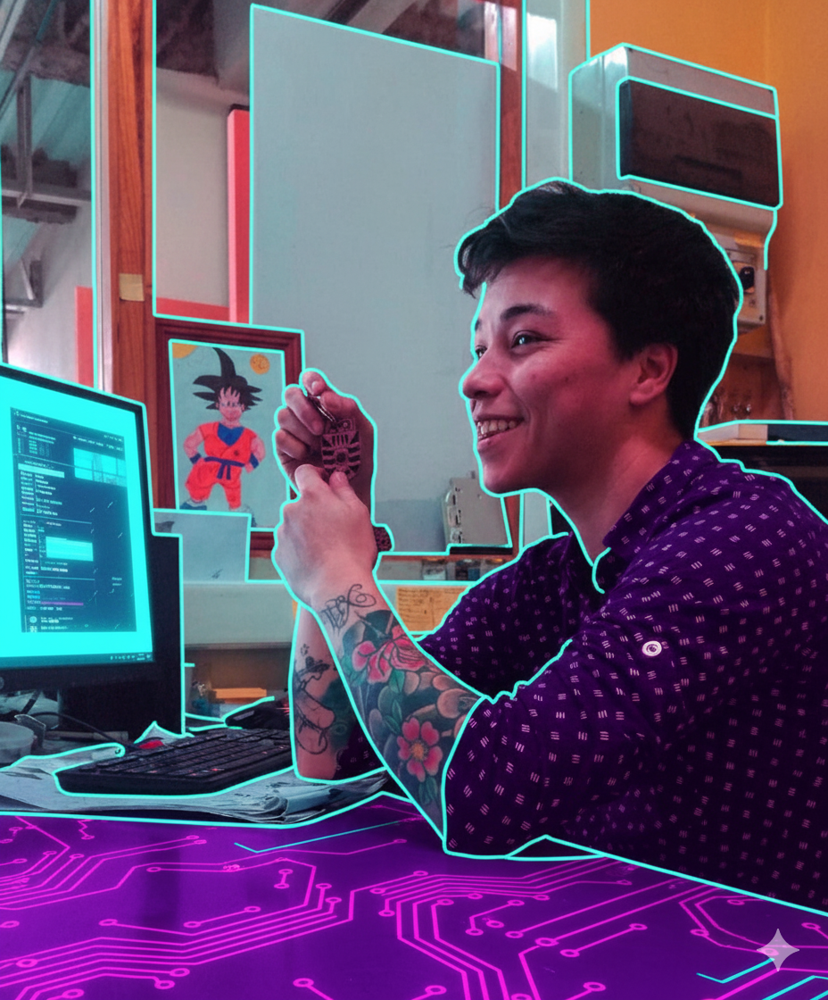

Kisi Toledo
Diseñadora Industrial & UX/UI. Trainee Front-End.
Especialista en diseño inclusivo, prototipado avanzado y desarrollo de soluciones digitales lógicas y escalables.
Evolución Académica
Desarrollo Front-End Trainee
Bootcamp 441 hrs [Actual]
Certificación Diseño UX/UI
Universidad Andrés Bello [2024 - 2025]
Diplomado Diseño Web y UX/UI
Universidad Andrés Bello [2024 - 2025]
Diplomado Diseño y Prog. Web
Universidad Andrés Bello [2024 - 2025]
Diplomado Marketing Digital
Universidad Andrés Bello [2024 - 2025]
Diplomado Gestión Ágil
Universidad Andrés Bello [2024 - 2025]
Diseñadora Industrial
Universidad del Bío-Bío [2016]
Licenciada en Diseño
Universidad del Bío-Bío [2015]